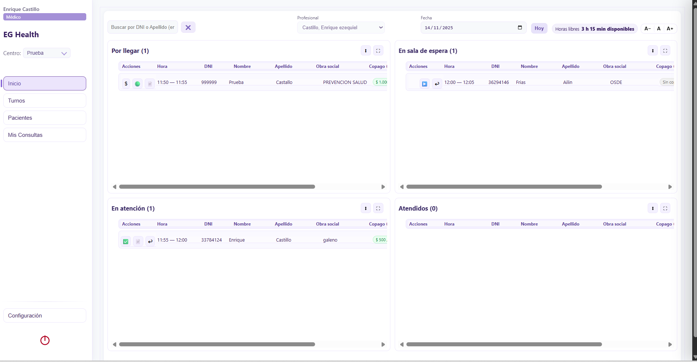

Panel de turnos por estado
Ves tus turnos del día agrupados por estado: por llegar, en espera, en atención y atendidos. También distinguís qué turnos son primera consulta, control o urgencias para saber dónde necesitás más tiempo.

▶ Pasá el mouse para ver la animación